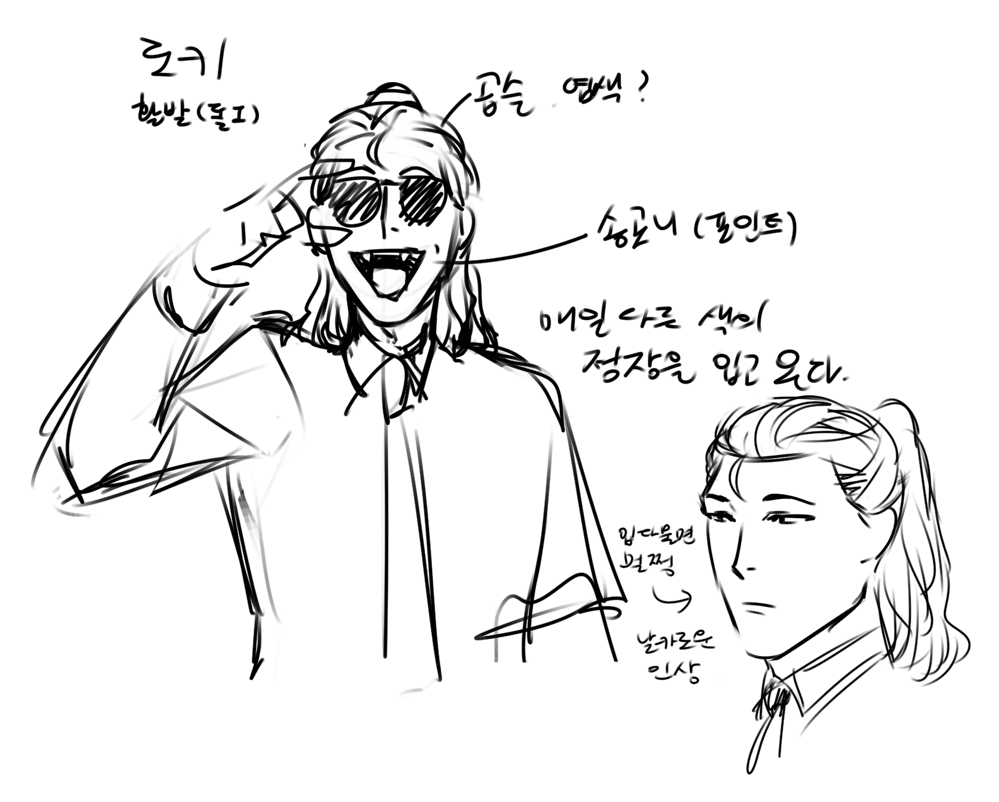
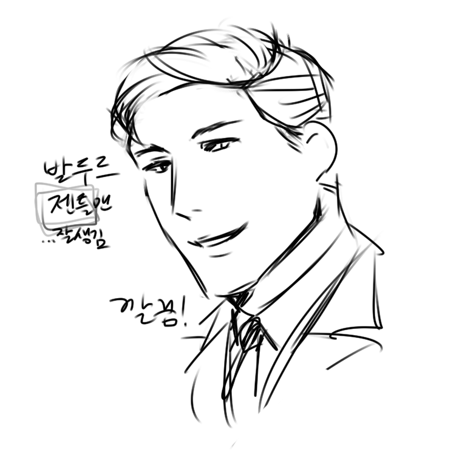
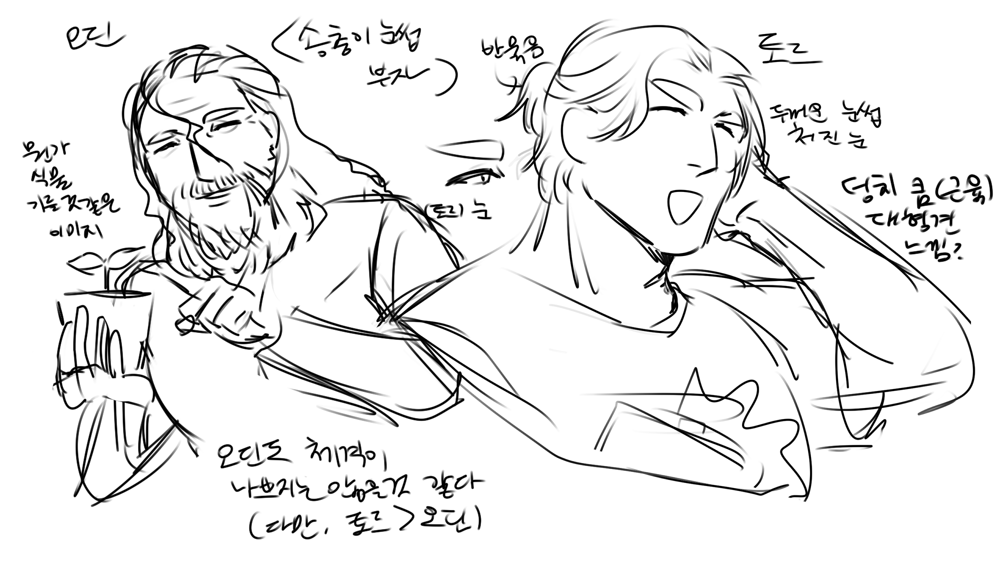

로키

- 인적사항
- 월목주식회사 신입사원
- 나이는 20대 초 중반
- 매일 옷이 다르고, 옷과 넥타이도 따로 논다. 전반적으로 색이 맞는 것은 자켓과 바지이며, 나머지 셔츠와 넥타이는 매일 바뀐다.
- 입을 다물면 제법 날카로운 인상에 꽤 멀쩡하다. 열면 큰 송곳니가 부각되어 완전 다른 인상이 된다.
- 곱슬머리에 장발이라 머리를 묶고 다닌다.
- 성격
- 선그라스를 즐겨쓰며, 웃는 표정 디폴트는 환하며, 어금니가 보이지, 그렇지 않을 때는 무표정인데, 주변에선 혹시 이중인격이 아니냐는 말이 돈다. (웃을 때는 불의 자아 로게, 아닐 때는 속임수의 자아 로키)
- 실제로 일할 때도 성격 변화가 큰 편인데, 굳이 남들 보는데서는 일을 안하면서 최대한 게으른 듯하지만, 혼자 남아있을 때 그제서야 본격적으로 일을 시작한다. 아마 본사에서 내린 지침과 관련이 있는게 아닐까?
- 하지만 본사 지침이 분명 있긴 한 것 같은데, 이 남자, 술과 음식, 담배, 노래, 춤, 게임 등등에 한눈을 많이 파는 것 같다. 어디까지가 연기이고, 어디까지가 본심인걸까?
- 다만 로게, 로키 둘 중 어느 자아더라도, 공통적으로 장난을 좋아하는데, 둘이 추구하는 장난의 성향이 다르다. 로게는 표면적으로 크게 눈에 띄는 어그로성 장난을 좋아하는 반면, 로키는 상대방이 자신이 당한지도 모르게 장난을 치는 것을 좋아한다. 어느쪽이든 분명 조금 도가 지나치다.
발두르

- 인적사항
- 월목주식회사 영업팀장
- 나이는 20대 후반에서 30대 초반
- 단어 그대로 후광이 나고, 어떤 의미에선 어떻게 이런 자식이 나왔는지 의심스러운 수준
- 언제나 하얀색 투피스 양복을 입고 다니며, 안에 셔츠는 검정색. 넥타이도 색은 항상 똑같이 하얀색, 무늬만 조금씩 바뀐다.
- 오딘의 둘째 아들로, 첫째 아들은 토르
- 영업을 잘 하는 것은 아버지를 닮았다는 소리를 듣지만, 사실 엄연히 다른 스타일로 영업을 뜀
- 성격
- 오딘이 인간과 만물에 대한 불신에 바탕을 두고 영업을 뛴다면, 발두르는 만물에 대한 무한한 신뢰를 바탕으로 영업을 뜀. 그럼에도 성공적일 수 있었던 것은 그 누구도 발두르에게 사기를 치려 하지 않았기 때문.
- 다만 사기를 치지 않는다는게 단순히 발두르가 성격과 머리가 좋다거나, 혹은 공정해서가 아니라는 말이 업계에서는 조금씩 돌지만, 대부분은 신경쓰지 않는다. 실제 성격과 만물에 대한 신뢰가 일치하는지는 알 수 없다.
- 회사 내에서도 손에 꼽는 인싸로, 다른 지부 사람들과도 자주 연락을 주고 받는 모습을 자주 보이며, 이로 인해 주로 외부 소식통을 담당하는 듯.
- 평소 성격은 조용한 긍정주의자. 차분하지만, 그 안에 담겨있는 세상 모든 것들에 대한 사랑은 듣는이가 누구일지라도 느낄 수 있음.
- 누구도 발두르의 옷에 무언가 묻은걸 본 적이 없다고 한다. 이런 저런 소문에 의하면 옷에 코팅을 했다거나, 매일 락스로 빤다는 등 말은 많지만, 정작 물어보면 그저 하하 웃고 만다고.
- 마냥 겸손하지만은 않다. 적어도 자신의 능력에 대한 자각은 확실히 하고 있는 듯
오딘
- 인적사항
- 월목주식회사 대표
- 나이는 40-50대 정도로 책정
- 계약의 신이라 불릴 만큼 왕년에는 영업의 천재였음
- 나이가 세월을 놓치고, 직급은 승진을 놓치고, 결국 모회사의 작은 계열사 대표로 연명하고 있음
- 성격
- 자신이 여전히 이 바닥에선 통한다고 생각하지만, 아무래도 그건 아닌듯. 물론 똑똑한건 맞음.
- 아들인 토르를 생산팀 낙하산 팀장으로 배치하면서 사원들의 불만이 많아졌지만, 눈치를 채지 못한 것인지, 알면서도 외면하는지는 알 수 없음. 술자리에서 시비가 붙어도 꼭 아들 뒤에서 소리를 지른다. 거구의 아들이 자신을 지켜주기 때문인걸까? 그러면서도 껄끄러워하는걸 보면 중년의 마음은 좁디 좁다. 다만 낙하산으로 팀장에 앉힌 것이 당시 아들이 맡은 대표직과 거래한거라는 소문이 암암리에 있음.
- 대표자리에 대한 집착이 무척 심하며, 암만 회사에 일이 안 들어오고, 직원들이 해고되더라도 자기 자리 만큼은 보전하려고 한다. 이 때문에 예전 잠시 대표 자리를 차지했던 아들 토르에게 꿍한 구석이 있다.
- 옛날 이야기 하는 것도 정말 좋아하고, 노래 부르는 것도 좋아하고, 스포츠도 정말 좋아해서 아무도 그와 퇴근 후 놀지 않는다.
- 본인이 지혜롭다고 생각하지만, 어쩌면, 그리고 높은 확률로 아직 농경세계에 머물러있는 자신의 세상에 갖혀 살고 있을 것이다.
- 의외로 인재 발굴에 천부적 재능이 있다. 본사 영업팀에서 스카웃 제의가 들어왔었지만 매번 거절했다고.
- 그래도 거래처나 사원들과의 사이가 썩 나쁘지 않은걸 보면, 처신을 잘하는 것도 같다.
- 로키는 똑똑하고, 일도 잘하는데 뭔가 찜찜하다. 본사에서는 대체 왜 이런 애를 여기로 보낸걸까? 가장 찜짐한건 뭔갈 시키면 100에다가 자기껄 뭔가 넣어서 가져온다. 다른 사원들이랑 다르게 로키는 어쩐지 불안하다. 수천년 경력에서 얻은 감이 작동한다.
- 발두르는 오딘에게 희망이다. 든든하지만 찜찜한 토르와는 달리, 이 지루하고 무료하면서도 위태로운 삶 속에서 오딘에게 발두르는 한줄기 빛과 같다. 다만 서로 그렇게 생각하는지는 알 수 없다.
토르
- 인적사항
- 월목주식회사 농업팀장 및 발전팀장
- 나이는 30대 중반
- 모두가 양복을 입고 출근하는 이곳에 홀로 망치가 그려진 티셔츠를 입고 출근하는 남자
- 성격
- 이런 행위가 마이웨이거나, 반항하려는 의도보다는, 그냥 생각이 없어보인다.
- 힘은 정말 좋은데, 힘만 좋다. 다른 것도 다 근육인 것처럼 보이기도 한다. 하지만 사실 같이 일하는 오딘과 로키가 너무 똑똑해서 그렇지, 그냥 평범하게 사고하는 편이다.
- 승진이고 뭐고, 그냥 나는 내 일만 하면 좋겠다. 괜히 귀찮게 생각하는건 싫다 그냥 힘쓰는게 제일 쉽다 주의
- 하지만 술자리에서 아버지가 시비가 붙으면 항상 자기한테 오면 어떤 새끼가 우리 아버질 건드려?
- 잠시 대표직을 맡았던 적이 있었는데, 그때 자신을 바라보던 아버지의 모습이 생생하다. 아버지를 조금 무서워하는 듯하다
- 의외로 팀원들과는 사이가 좋다. 시원시원하고, 술도 잘마시며, 무엇보다 남자다움이 제법 어필되는 것 같다.
- 팀원들 중에서 티알피와 로스크바는 반쯤 잡혀오긴 했어도, 생각보다 토르의 대우도 좋고, 자신들 자리를 맘에 들어하는 것 같다.
- 로키는 재미있고, 술도 잘 마시고, 다 좋다. 다만 자꾸 어쩐지 날 놀려먹는 것 같기도 하고, 그래도 나쁘지 않다. 재미있으면 그만이다.
xs